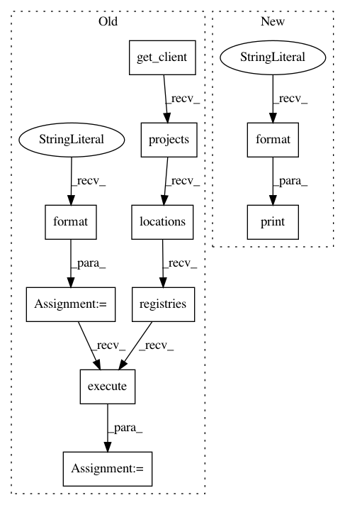

fcaf37ca034fecabeda10af7e5fe3c92760c2b48,iot/api-client/manager/manager.py,,open_registry,#Any#Any#Any#Any#Any#Any#,249
Before Change
registry_id):
Gets or creates a device registry.
print("Creating registry")
client = get_client(service_account_json, api_key)
registry_parent = "projects/{}/locations/{}".format(
project_id,
cloud_region)
body = {
"eventNotificationConfig": {
"pubsubTopicName": pubsub_topic
},
"id": registry_id
}
request = client.projects().locations().registries().create(
parent=registry_parent, body=body)
try:
response = request.execute()
print("Created registry", registry_id)
print(response)
except HttpError as e:
if e.resp.status == 409:
After Change
if (response is ""):
// Device registry already exists
print(
"Registry {} already exists - looking it up instead.".format(
registry_id))
response = get_registry(
service_account_json, api_key, project_id, cloud_region,
registry_id)
In pattern: SUPERPATTERN
Frequency: 3
Non-data size: 10
Instances
Project Name: GoogleCloudPlatform/python-docs-samples
Commit Name: fcaf37ca034fecabeda10af7e5fe3c92760c2b48
Time: 2017-09-12
Author: gguuss@gmail.com
File Name: iot/api-client/manager/manager.py
Class Name:
Method Name: open_registry
Project Name: GoogleCloudPlatform/python-docs-samples
Commit Name: c8a2ce20be850ed99e8b7fb0d3ff48ec025fb4f0
Time: 2019-09-26
Author: gguuss@gmail.com
File Name: iot/api-client/manager/manager.py
Class Name:
Method Name: get_state
Project Name: GoogleCloudPlatform/python-docs-samples
Commit Name: 14995eb1b0921a5afbfb094993aeb0485f3f4d55
Time: 2019-10-18
Author: gguuss@gmail.com
File Name: iot/api-client/manager/manager.py
Class Name:
Method Name: get_config_versions